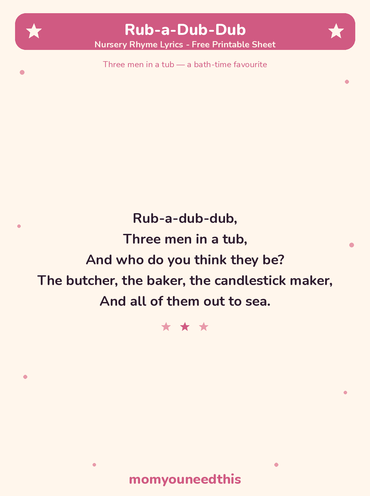

Rub-a-Dub-Dub The Silly Bath-Time Rhyme, With Lyrics and a Free Printable
Bath time is this rhyme's natural habitat: five lines, three silly men, one tub. Sing it while the water runs and it becomes part of the routine — no lesson, no effort, just a song that belongs to the bath.
Last updated: October 25, 2026
Quick Answer
Rub-a-Dub-Dub is a traditional nursery rhyme about three men in a tub: the butcher, the baker and the candlestick maker, all of them out to sea. It's now a bath-time favourite — some families sing “scrub-a-dub-dub,” which fits bath time perfectly. The full lyrics and a free printable sheet are on this page.
At a Glance
- Rhyme: Rub-a-Dub-Dub
- Type: Bath-time singing rhyme
- Best for: Ages 1–4, in the bath
- Lyrics: The complete classic verse — 5 lines
- Printable: 1 lyrics sheet
- Cost: Free — print at home
🎵 Rub-a-Dub-Dub Lyrics
The complete classic verse — short enough for the smallest singers to learn whole.
Rub-a-dub-dub,
Three men in a tub,
And who do you think they be?
The butcher, the baker, the candlestick maker,
And all of them out to sea.

✂️ Download Your Free Rub-a-Dub-Dub Lyrics Sheet
The whole rhyme on one cheerful sheet — made for the bathroom wall (just out of splash range).
⬇️ Download Free Lyrics Sheet 🖨️ Print🎁 Free printable for ages 1–4, at bath time
🛁 About This Rhyme
Three grown men in one tub is an absurd picture, and that is the whole joke — children love naming the trio as they arrive: the butcher, the baker, the candlestick maker. Those were three trades every old town had, so the rhyme doubles as a tiny window into how people once lived and worked: meat from the butcher, bread from the baker, and light from the candlestick maker.
A version note, honestly labelled: the earliest printed texts, from the late 1700s, had “three maids in a tub” and ended with the tradesmen “gone to the fair.” Over time the words settled into the “three men” version sung today, and bath time claimed the rhyme as its own — “rub-a-dub-dub” sounds exactly like scrubbing, which is why so many families sing it in the tub.
🖨️ How to Use This Rhyme
- Sing it in the bath. Scrub along on “rub-a-dub-dub” — arms, tummy, toes — and splash gently on “out to sea.” The rhyme is short enough to sing three times in one bath.
- Name the trio. Pause before the jobs line and let your child shout who is in the tub: the butcher, the baker, the candlestick maker. Taking that line over is the toddler highlight.
- Print the lyrics sheet. Hang it near the bath or keep it with the bath toys, so the words are handy at the moment they are needed.
- Let your child “read” it back. Five short lines are a whole rhyme a small child can truly learn by heart — holding the sheet and performing it solo is a big moment.
🎵 More Rhymes & Fun
🎵 Nursery Rhymes
The full collection of classic rhymes to sing together, each with its own printable lyrics sheet. Browse all nursery rhymes.
🌙 Wee Willie Winkie
The gentle bedtime rhyme about the little figure who checks that every child is in bed. Sing Wee Willie Winkie.
👑 The Grand Old Duke of York
The marching action rhyme — stand tall, crouch down, and freeze halfway up. March with the Duke.
📚 Learning Activities
The full hub of free printable activities for toddlers and preschoolers. Browse activities.
❓ Rub-a-Dub-Dub FAQ
What are the lyrics to Rub-a-Dub-Dub?
The full Rub-a-Dub-Dub nursery rhyme lyrics are in the lyrics section above — the complete classic verse, all five lines, ending with the three men “out to sea.” They are also on the free printable lyrics sheet on this page.
What age is Rub-a-Dub-Dub for?
It suits ages 1 to 4 best. It is one of the shortest rhymes there is — five lines — so even a young toddler can join in on “rub-a-dub-dub” and learn the three men's jobs one bath at a time.
Who are the three men in the tub?
The butcher, the baker and the candlestick maker — the three tradesmen every town once had. Naming them as they arrive is the heart of the rhyme, and the line children love to shout.
Can I print the lyrics sheet?
Yes — the lyrics sheet is free to print at home with no signup. It carries the complete verse, exactly as printed on this page, in big, clear type.